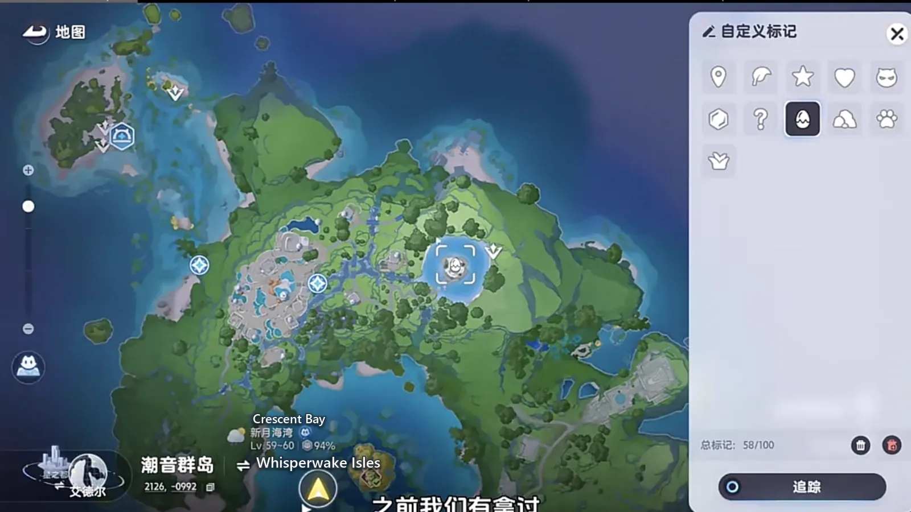
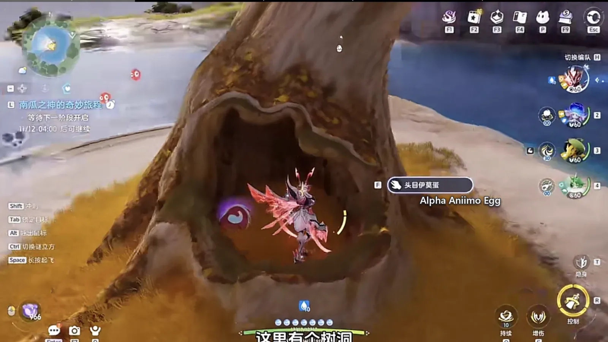
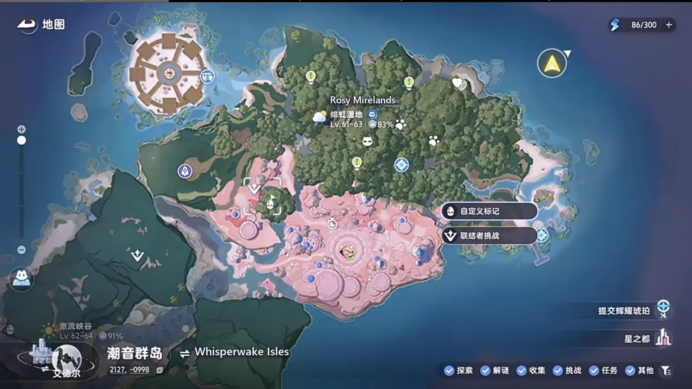
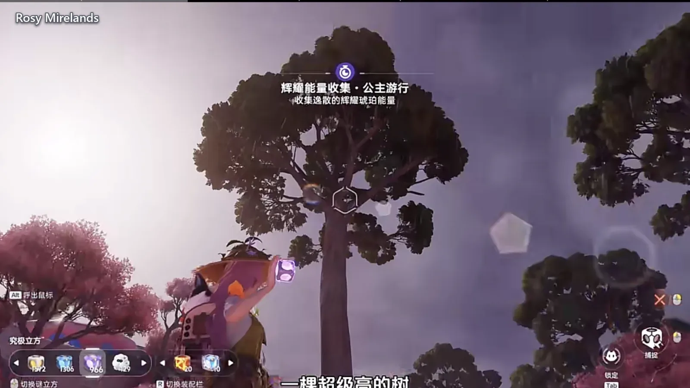
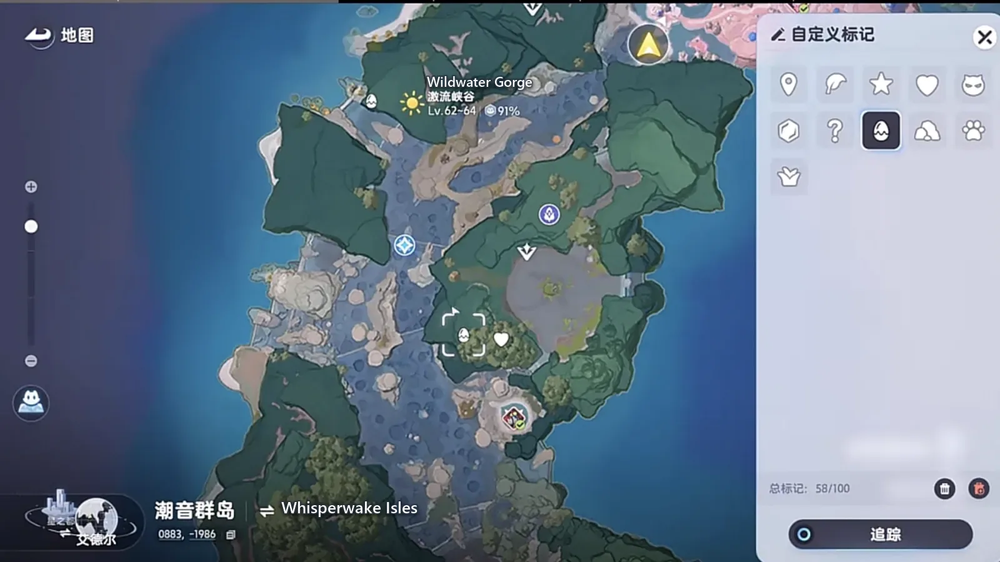
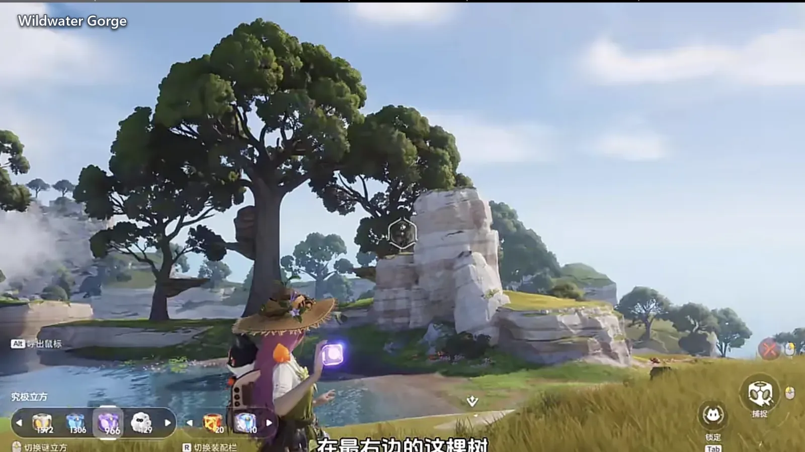
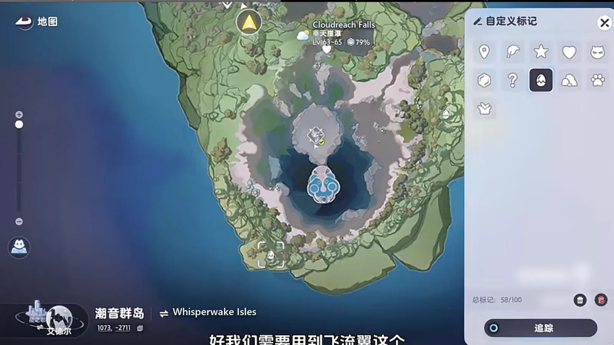
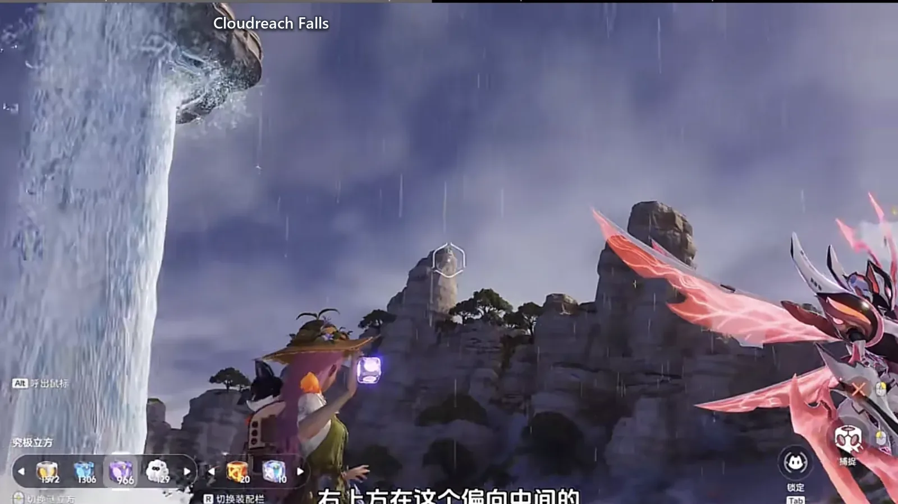
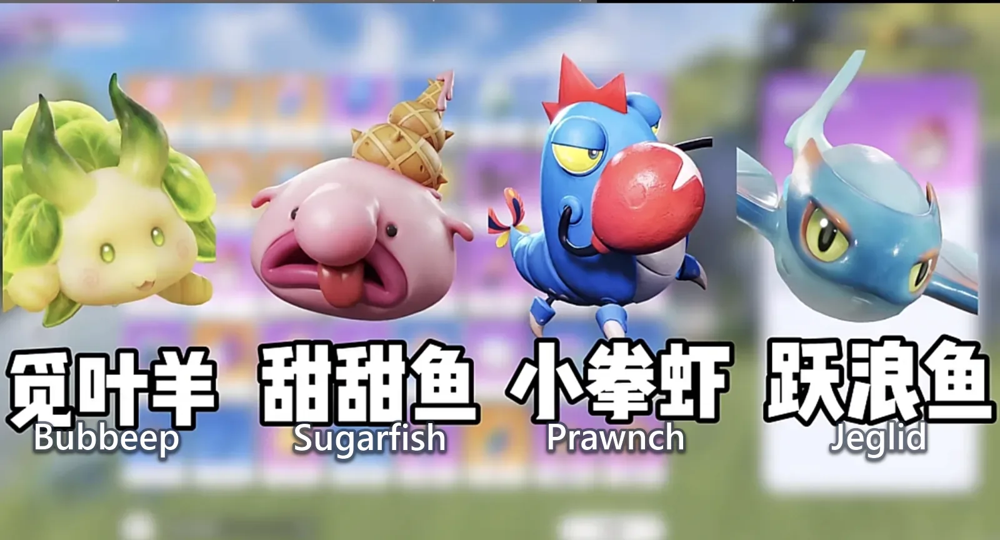

Home首页 / Guides攻略 / Four Alpha Eggs on the New Map, and the Four-Flash Jeburst《伊莫》新地图四颗头目蛋，四闪飞流翼
Checked核对于 November 2, 20262026 年 11 月 2 日
Four Alpha Eggs on the New Map, and the Four-Flash Jeburst《伊莫》新地图四颗头目蛋，四闪飞流翼
One Alpha egg per region on the Whisperwake Isles, and only the Cloudreach Falls one becomes a four-flash Jeburst. Where each egg is, which one to hatch, and the Prismana step that waits for 16 November.潮音群岛每个区域一颗头目蛋，四颗里只有垂天崖瀑那颗能做四闪飞流翼 —— 每颗在哪、孵哪一颗、11 月 16 日那一步怎么接。
Each region of the new map leaves one Alpha egg, and of the four only one becomes a four-flash Alpha Jeburst — the Jeglid egg from Cloudreach Falls. All four eggs look identical; only the description under each one differs. So the order is the plan: collect all four first, then go back and hatch only the Cloudreach Falls one, link it once with a Sparkling Cube, wait for the 16 November Prismana event to bring out a Prismana Jeburst, and change the form across.新地图上每个区域落一颗头目蛋，四颗跑完，只有一颗能做成四闪头目飞流翼 —— 垂天崖瀑那颗跃浪鱼。四颗蛋的外观一模一样，只有下面那行介绍文字不一样，所以顺序得排好：先把四颗都拿到手，回头只孵垂天崖瀑那一颗，用闪耀立方连一次，等 11 月 16 日的虹光活动刷出虹光飞流翼，再把形态改过去。
Four flashes is four traits: Prismana, Sparkling, Perfect Potential and Alpha. All four together or it does not count; with one missing it is an ordinary creature with a nice skin.四闪是四条：虹光、闪耀、闪亮、头目。四条凑齐才算数，少一条都只是普通的一只。
Four traits, and Alpha is the ticket in四闪是四条，头目是门票
Not every Aniimo can be built this way. There is one precondition: it has to be an Alpha to start with. An Aniimo with no Alpha form can have its appearance rolled until the game shuts down and still never reach four.四闪这个组合，不是哪只伊莫都能凑。前提只有一个 —— 它本身得是头目。没有头目形态的伊莫，外观刷得再花也凑不齐四条。
The Alpha layer deserves its own paragraph. Every Aniimo's core skill can be upgraded, most of them by a wide margin, and on a damage dealer it is close to mandatory. An Alpha Aniimo carries that upgrade already; one with no Alpha form can only fill the gap with a contract held item, and the materials and the cost both come on top. The other half of the Alpha bargain is material saved — nothing spent on a held item, and a later swap to a different one costs nothing.头目这一层值得单独说。伊莫的核心技能都能强化，大多数强化幅度都不小，输出位基本是刚需。头目伊莫自带这层强化；没有头目形态的，就只能靠契约携带物去补，材料另算、花费也另算。头目的另一头好处是省材料 —— 不用契约携带物，后面想换别的携带物也随便换。
Egg one: Crescent Bay, the hollow under the yellow tree第一颗：新月海湾，黄树底下的树洞
The first is in the upper part of Crescent Bay, the same spot where the dark-fire wave used to be. Take the Mirrorsea Village waypoint beside it, land and head left along the same old path. The yellow tree in front is easy to recognise — it is the one you came to for Lumin Amber. If your stamina is gone by the time you get there, let it come back first and then keep going: there is a hollow at the foot of the yellow tree, and the first Alpha egg is inside it.第一颗在新月海湾上面，就是之前拿黑暗火波的那个位置。走旁边的镜海村传送点，落地往左，还是以前那条老路。前面这棵黄树很好认，之前来拿过辉耀琥珀的就是它。走到这儿没体力了就先回一下，接着往前走，黄树下面有个树洞，第一颗头目蛋就在洞里。


Crawl in and the first one is yours.钻进去，第一颗就到手了。
Egg two: Rosy Mirelands, the tall tree left of Sugartini第二颗：绯虹湿地，甜妮妮左边那棵高树
The second is in the Rosy Mirelands, to the left of Sugartini (ice · support). Use Sugartini's Alpha waypoint, then walk straight back behind you: one tree there stands several times taller than anything else and you can see it from a long way off.第二颗在绯虹湿地，位置在甜妮妮（Sugartini，冰 · 辅助）左边。用甜妮妮的头目传送点，传送完往正后方走，正后方有一棵特别高的树，隔着老远就能看见。

That tree is too tall to reach in one flight — the bar will run out for certain. Go up from the left instead: land on the ledge first, refill, then make the last hop onto the tree. The second egg is on top of it, and there is nowhere else to look.树太高，一次飞到顶体力肯定不够。所以从左边飞上去，先落到平台上把体力回满，再飞最后这一段到树上。第二颗就在树顶，不用再往别处找。

Egg three: Wildwater Gorge, the rightmost of three trees第三颗：激流峡谷，三棵里最右边那棵
The third is in the Wildwater Gorge. Take the Bloom waypoint and walk straight back behind you — three trees grow there side by side, one, two, three, close together, and you will see them as soon as you climb the slope away from the waypoint.第三颗在激流峡谷。走地脉花传送点，传过去往正后方走，那边并排长着三棵树，一棵、两棵、三棵，三棵离得很近，从传送点过去顺着坡往上就能看见。

The egg is on the rightmost of the three. Ignore the first two, fly up to a treetop to get your bar back, and once it is full climb a little higher and you are there.蛋在最右边那棵上面。前面两棵不用管，先飞到树顶回一下体力，回满了再往上飞一点就到了。

Egg four: Cloudreach Falls, the peak below Jeburst第四颗：垂天崖瀑，飞流翼底下那座山头
The fourth is at Cloudreach Falls, below the Alpha waypoint that serves the Jeburst group. Take that waypoint, look up and to the right, and pick the taller of the peaks toward the middle of the view.第四颗在垂天崖瀑，位置在飞流翼这一组首领传送点的下方。用飞流翼这个伊莫首领传送点传过去，往右上方看，挑偏向中间那座比较高的山头飞。

Leave yourself some stamina before you set off. If it does run out, just climb — climbing costs far less than forcing a flight and it is the easier way up. Keep going and you reach the fourth.飞到这边先给自己留一点体力。真不够了就直接爬，爬山反而用不了那么多体力，比硬飞省事。继续往上飞就是第四颗。

All four in hand — first check which four they are四颗拿齐，先看清孵出来的是哪四只
With all four eggs collected, open the bag and look. The four regions give Bubbeep (grass · water · healer), Sugarfish (ice · regen), Prawnch (ice · break) and Jeglid (water · break).四颗蛋拿齐，回到背包里就能看到。四个区域给的分别是觅叶羊（Bubbeep，草 · 水 · 治疗）、甜甜鱼（Sugarfish，冰 · 回能）、小拳虾（Prawnch，冰 · 击破）和跃浪鱼（Jeglid，水 · 击破）。

The first three are not much use as they stand. Each of them has a stronger form further up its line: Glameep (grass · water · healer), Sugartini and Jabster (dark · ice · break). Keep those three rather than getting itchy and spending them on something else. The one to actually work on is the Jeglid.前三只目前没什么用。它们各自往上都还有更强的形态：丽芙羊（Glameep，草 · 水 · 治疗）、甜妮妮、拳簧虾（Jabster，暗 · 冰 · 击破）。这三只先留着，别一时手痒拿去做别的。真正要动手的，是最后那颗跃浪鱼。
Hatch only the Cloudreach Falls egg只孵垂天崖瀑那颗
Take the eggs to the incubator, and do not be quick about this step. The eggs are exactly alike; only the description under each one differs, so it is easy to grab the wrong one.拿到蛋去孵化器，这一步别手快。几颗头目蛋的外观完全一样，只有下面的介绍文字不一样，别看错。
It has to be the Cloudreach Falls egg. Cloudreach Falls gives a Jeglid, and Jeglid evolves into Jeburst (water · break). Jeburst is a water breaker, and among the water breakers it sits high on the list for a slot.一定要选垂天崖瀑的蛋 —— 垂天崖瀑给的就是跃浪鱼，跃浪鱼能进化成飞流翼（Jeburst，水 · 击破）。飞流翼是水系击破位，在水系击破里的上场优先级比较高。
Once the egg hatches, link it with a Sparkling Cube, and what you get is a Jeglid carrying all three of Alpha, Perfect Potential and Sparkling at once. Evolve it into Jeburst afterwards. That step waits on account level 65, because the evolution wants the creature at 66 first — below that nothing will move.蛋孵出来之后，用闪耀立方去联结，拿到的是一只头目、闪亮、闪耀三条全齐的跃浪鱼。之后再把它进化成飞流翼就行。这一步要等账号到 65 级，因为进化要求先把它升到 66 级，等级不到动不了。
This whole routine only pays off if you mean to build the thing. Not everyone has to. If you do not want the bother, this is a fine place to stop.这套操作只适合真想打造的人，不是所有人都得弄。不想折腾的，到这儿为止就可以。
The Prismana line waits for 16 November虹光那一条，等 11 月 16 日
The last of the four traits is Prismana. There is a limited Prismana event on 16 November, and the Prismana Jeburst comes out then.四条里最后一条是虹光。11 月 16 日有限定虹光活动，虹光飞流翼就在那时候出。
The catch is here: once you have the Prismana Jeburst, link it with a plain Aniipod — do not spend another Sparkling Cube. The Alpha layer is already on the one you built, so there is no reason to pay for it twice. After the catch, reopen that Alpha Sparkling Jeglid and choose More.重点在这儿：刷到虹光飞流翼之后，直接用普通立方联结就行，不要再用闪耀立方 —— 头目那一条已经在手上了，没必要再花一次。抓到之后，回头点开之前那只头目闪耀跃浪鱼，选更多。
Changing form is under More, bottom right of the basic form改形态就在基础形态右下角那个「更多」
Then choose Change Form. Inside that screen there is a More at the bottom right of the basic form; choose the Prismana form, spend one Prismana orb there, and the basic form becomes the Prismana form.接着选改变形态，进去以后在基础形态的右下角有个更多，选虹光形态，在这儿消耗一个虹光宝珠，普通形态就变成虹光形态了。
You can practise this without having any other form yet — a jellyfish demonstrates the same route: open more info, then tap change form at the end.手上没拿到其他形态也能先练手，拿水母来演示是一样的走法：点更多信息，最后点改变形态。
If what you actually like is the Tempest Form Jeburst, a Morph Orb converts the basic form straight into the Tempest Form, and there is no need to go and catch a Prismana one specially.如果特别喜欢风暴形态的飞流翼，可以直接用异形宝珠把普通形态换成风暴形态，不用专门再去抓一只虹光的。
Prismana orbs: one per half-season in the season shop虹光宝珠，赛季商城半个赛季一个
Outside of paying, the season shop hands out one Prismana orb every half-season. The Whisperwake Isles orb in the current shop, for instance, can be spent on any Aniimo from the Whisperwake Isles to give it the Prismana form — provided it has a Prismana form at all, and that you have already caught enough Prismana of it.虹光宝珠除了氪金，赛季商城里每半个赛季相当于送一个。比如当前赛季商店里那颗潮音群岛虹光宝珠，可以拿去给潮音群岛的伊莫换虹光形态 —— 前提是它本身有虹光形态，自己也抓够了虹光。
If it is a Prismana Sugartini or Jabster you are after, catch the Alpha with a Sparkling Cube and change its form with a Prismana orb; it is nowhere near as much trouble as the Jeburst.要是特别喜欢虹光甜妮妮、拳簧虾这类头目，直接拿闪耀球抓 BOSS，再用虹光宝珠改形态就行，不像跃浪鱼这么麻烦。
One lap, and all four traits are in your hands一趟跑完，四条就齐了
The four eggs run from Crescent Bay through to Cloudreach Falls in a straight line, and the regions step up in level as you go, so the lap never doubles back.四颗蛋从新月海湾一路跑到垂天崖瀑，路是顺的，区域的等级也一路往上，跑完一遍不用回头。
At the incubator only the Cloudreach Falls egg counts: hatch the Jeglid, link it once with a Sparkling Cube and Alpha, Perfect Potential and Sparkling are all on it, take it to 66 and evolve it into Jeburst. On 16 November, catch a Prismana Jeburst, then take that Alpha Sparkling Jeglid back and change it to the Prismana form — four for four.回孵化器只认垂天崖瀑那颗，孵出跃浪鱼，用闪耀立方连一次，头目、闪亮、闪耀三条到手，练到 66 级再进化成飞流翼。等到 11 月 16 日去抓虹光飞流翼，抓完回头把那只头目闪耀跃浪鱼改成虹光形态，四条就齐了。
The three from the other eggs go into the bag. Each has a stronger form further up its line, so when you decide to raise one, follow the evolution line and it will get there.前三颗蛋孵出来的三只先放在背包里。它们各自往上都还有更强的形态，哪天想往上练，顺着进化线走就行。
More guides相关攻略
- Prismana, Sparkling, Umbral and the Shiny Star: Aniimo's Four Rare Terms, Explained《伊莫》四个词条：虹光、闪耀、幽黯、闪亮之星都是什么意思 — The two appearances and the one rating that decide whether an Aniimo counts as finished: which of them is limited, which is luck, which is nearly free, and the threshold that actually stops people.想让一只伊莫算得上毕业，标准是「双外观加一个闪亮之星」。这四个词条各管一段：哪个限量、哪个靠运气、哪个几乎白送，以及真正卡住大多数人的那道门槛。
- Aniimo's Water Team: Three of the Four Are There to Set Up Sherro's One Sword《伊莫》水系配队：一剑流星骑士，三只铺路只为最后那一剑 — A four-Aniimo Water party built around one damage dealer: what Piopiota, Panpanta and Turbo each lay down before Sherro comes in, and the order to switch them in.一套四只的水系阵容，全部围绕一个输出位搭：星骑士进场之前，漂漂獭、胖胖獭、蓬蓬羊各负责什么，以及换人的顺序。